Usually a sharp photo uses a shutter speed of a few hundredths or even a thousandth of a second. But the photos below are very different. Their shutter speed is only 1/30 s, 1/10 s, 10 s, 10 minutes, or more. When the shutter slows down, what kind of magical images does the camera capture for us?
A tram covered with 30,000 LED point lights just left.
Recently the foreign site Bored Panda put together a fun and creative set of long-exposure photos. In these works you rarely see common long-exposure themes such as star trails or car trails. The photographers instead looked at everyday moving objects around them, such as spinning rides in a park and the sweeping robot at home.
Because a 1/300 s shot and a 30-minute shot of a static subject do not differ in kind, the long-exposure photos here all capture the trails of moving objects (including light).
The Milky Way after long exposure and stacking forms a beautiful fractal geometry.
Empty streets, fireflies in a jar, traffic lights on the street. Behind each fun photo, photographers use this playful way to show the world slowed down. These photos are not only pleasing to the eye, they also let us discover the wonders of the world from another viewpoint.
Just how wonderful are they? Let us take a look.
Fireflies in the forest.
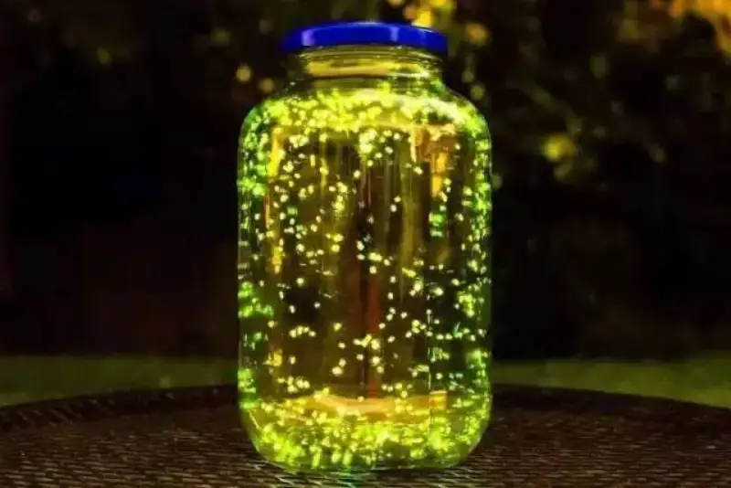
Fireflies in a glass jar.
A plane taking off.
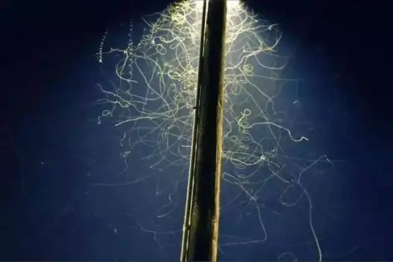
Insects dancing under a street lamp.
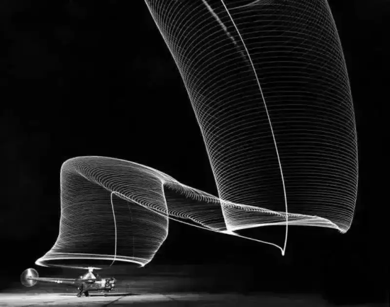
A helicopter landing.
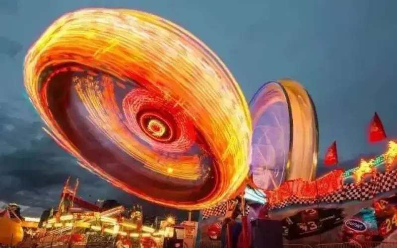
A ride at an amusement park.
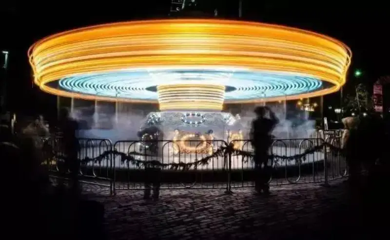
A carousel.
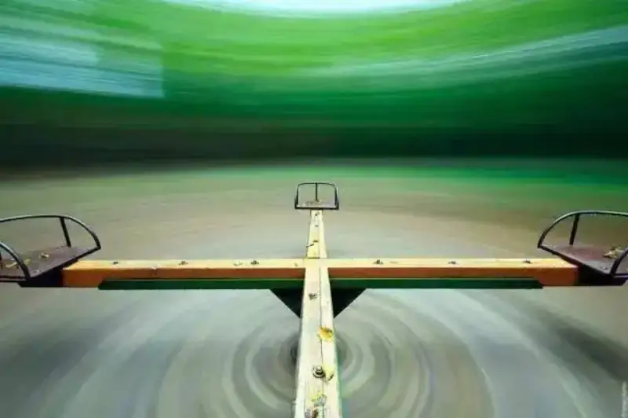
A simple ride.
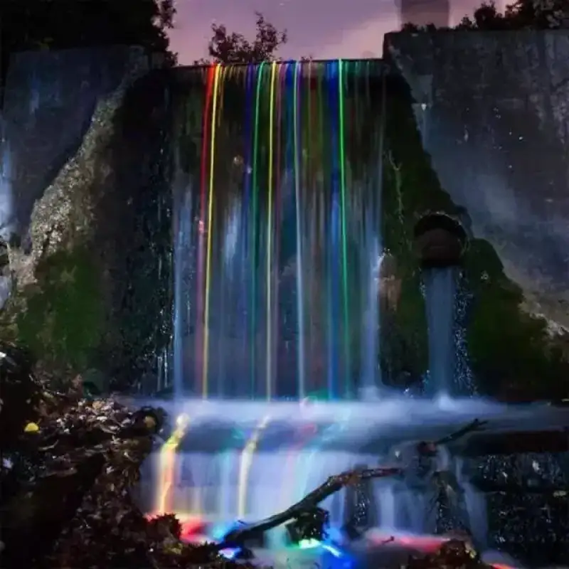
An LED light thrown from above a waterfall, flowing downstream.
A subway tunnel under long exposure.
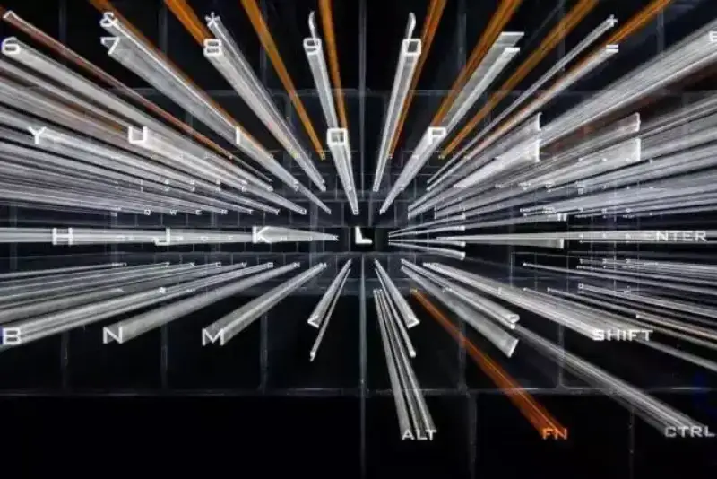
A keyboard that seems to belong in a sci-fi film.
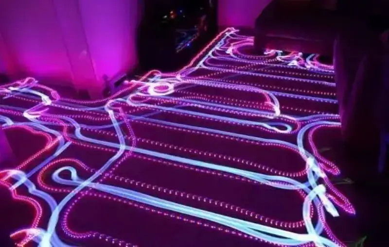
The trail of a sweeping robot.
Fireworks under long exposure.
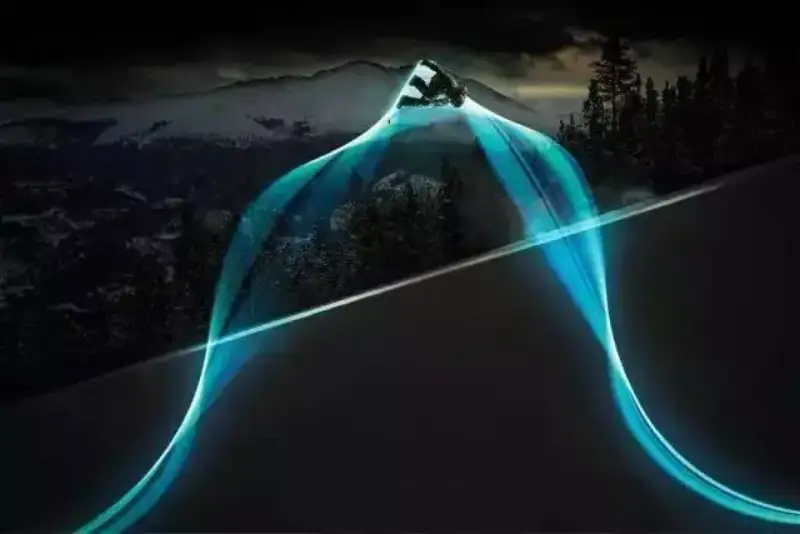
The trail of a snowboard fitted with an LED light.
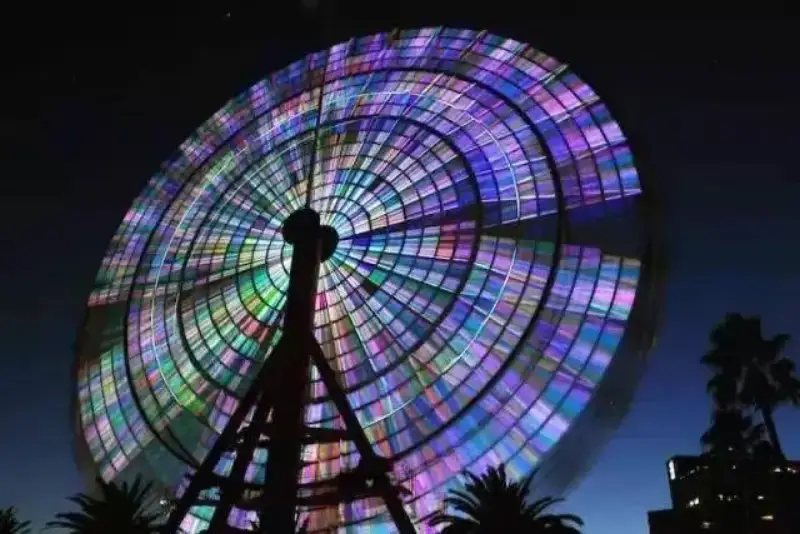
The Ferris wheel at night looks like a big lollipop.
A Halloween pumpkin.
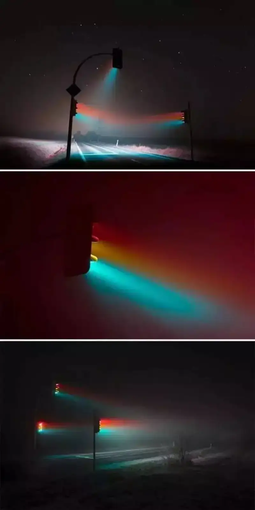
A wonderful street lamp.
A winding mountain road in the mist.
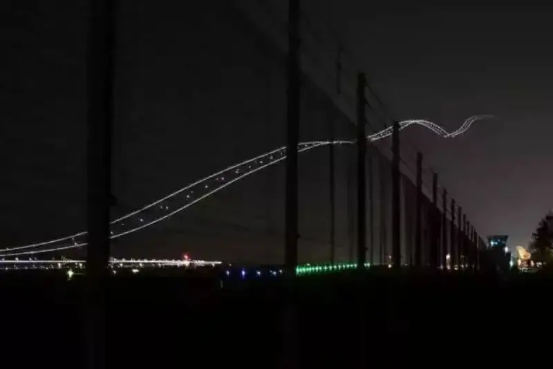
A plane taking off.
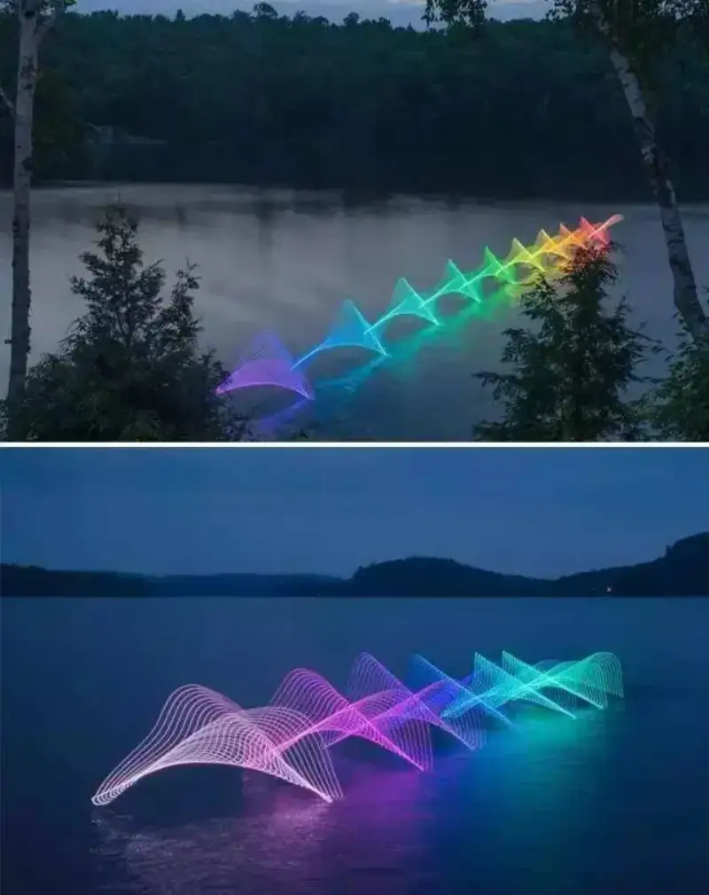
The rhythmic, orderly trails of kayakers.
Festival fireworks that look like succulent plants.
A truck passing on a road at night.
A subway passing by.
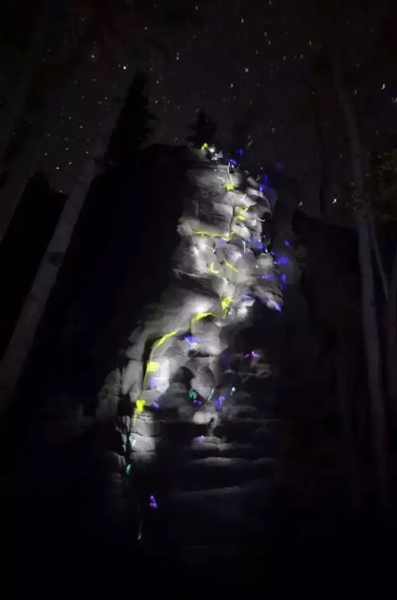
Rock climbing under long exposure, with glow sticks tied to hands and feet.
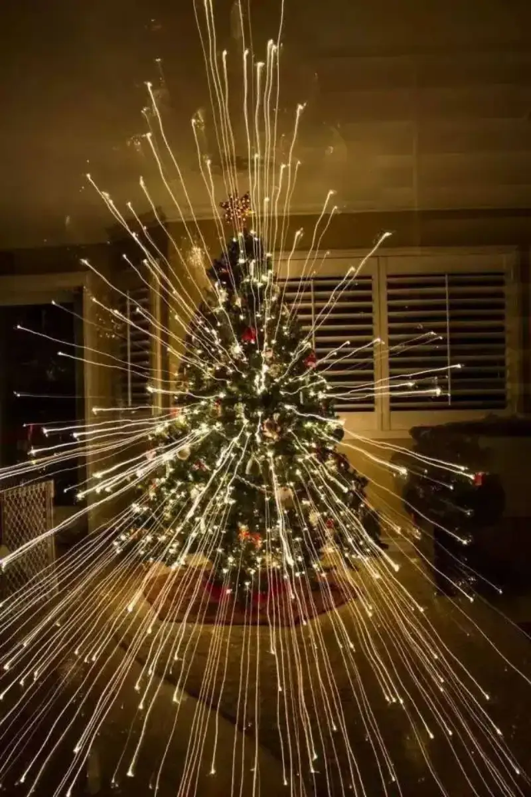